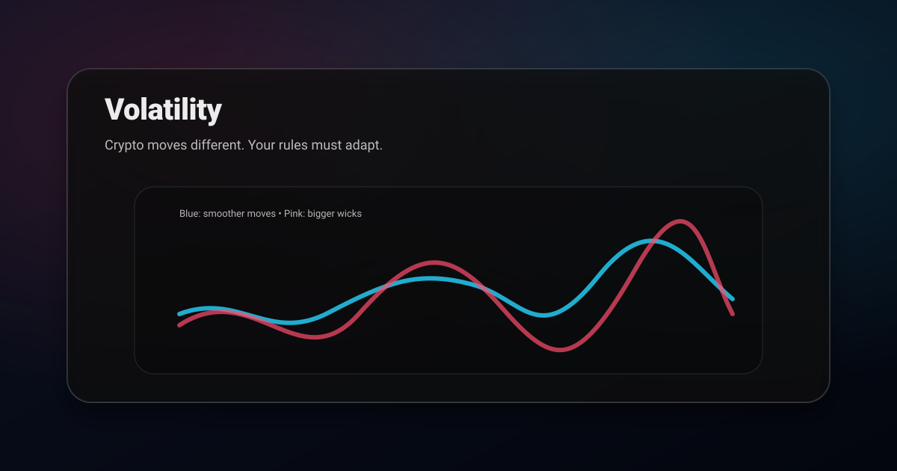

Reality check: no market guarantees profits. Adaptation is how you avoid getting chopped up.
Why crypto often wicks more
- 24/7 trading spreads liquidity across time.
- Leverage and liquidation cascades amplify moves.
- News sensitivity and thin periods create sudden wicks.
How to adapt levels
- Use zones, not thin lines.
- Prefer higher timeframe levels (they survive noise).
- Wait for close confirmation (break + close) more often.
How to adapt stops and sizing
- Stops often need more room in crypto → compensate with smaller size.
- Size from risk, not from “how confident I feel.”
A prompt for AI volatility adjustment
Analyze this setup and adjust for volatility.
1) Is this market likely to wick/sweep levels (volatility)?
2) Should levels be zones or lines here?
3) Suggest a trigger that avoids fakeouts
4) Where is logical invalidation, and how should sizing adapt?Put a number on it before you adjust anything
Saying crypto is more volatile than stocks is true and useless. You need the ratio, because the ratio is what your stop distance and position size are built from. Average True Range gives you that in one reading. Take ATR over 14 periods, divide it by price, and you have volatility as a percentage that compares cleanly across any two instruments.
On daily candles a large cap stock typically runs an ATR of 1.5% to 2.5% of price. The S&P 500 index sits lower, often near 1%. Bitcoin usually lands between 2.5% and 4%, and mid cap altcoins frequently print 6% to 10%. So a mid cap alt is not vaguely more volatile than a blue chip stock, it is roughly four times more volatile, and every risk decision should carry that factor.
This is why a fixed stop distance is a mistake. A 2% stop is generous on a mega cap stock, ordinary on Bitcoin, and inside the noise on a small altcoin where it will be taken out by a routine hourly candle. Express stops in ATR multiples instead and the same rule works everywhere.
Weekend gaps and the 24/7 problem
Stocks close. Crypto does not. That single structural difference changes how risk behaves in ways that catch equity traders out when they move across.
When a stock market is shut, news accumulates and gets priced in all at once at the open. Your stop does not protect you across that gap, it simply becomes a market order at whatever the new price is. This is a genuine, if occasional, tail risk, and it is the reason equity traders reduce size ahead of earnings.
Crypto has no gap because it never closes, which sounds strictly better and is not. Liquidity thins dramatically at weekends and during the Asian session, so the same size order moves price further. A sell-off into Sunday morning can travel a long way on modest volume simply because the order book is thin. You have traded a discrete gap risk for a continuous liquidity risk that is present every night while you sleep.
The practical consequence is that a crypto position is always live. If you would not hold it through a move that happens at four in the morning without you, either size it so you can, or set the alert and accept you might act on it late.
Liquidations amplify crypto moves
Stocks move on order flow. Crypto moves on order flow plus forced liquidation, and that second mechanism is why the wicks look the way they do. When leveraged positions hit their liquidation price, the exchange closes them at market, which pushes price further in the same direction, which liquidates the next tier. The cascade feeds itself until the leverage is cleared out.
This produces a distinctive signature: a fast spike that reverses almost as quickly, leaving a long wick and very little time spent at the extreme. Equity markets have circuit breakers that pause this kind of thing. Crypto has no such brake, so the move runs until it runs out.
What it means for you is that price briefly reaching a level is weaker evidence in crypto than in stocks. In equities a touch of support carries information. In crypto the touch may just be someone else's margin call. Wait for the candle to close, and prefer levels confirmed by where price spent time rather than where it merely printed.
Same setup, different parameters
The encouraging part is that structure reads the same in both markets. A break of a swing high is a break of a swing high. What changes is the tolerance you give it.
- Zone width. A support zone on a stock might be half a percent wide. The same quality of zone on an altcoin might need two or three percent, or it will look broken every week.
- Stop placement. Roughly 1.5 times ATR beyond the level works as a starting point in both markets, which automatically widens the stop where volatility is higher.
- Confirmation. In stocks a close beyond a level is usually enough. In crypto, ask for a close plus a hold, because the first close through a level is frequently a sweep.
- Targets. Higher volatility cuts both ways. Crypto reaches targets faster, so a 3R target is realistic on a timeframe where a stock would still be grinding toward 1.5R.
Volatility is not opportunity
The most expensive misreading in this whole topic is treating volatility as edge. It is not. It is dispersion, and it widens the distribution of outcomes in both directions. A market that can hand you 20% in a week can take 20% back in a day, and your win rate does not improve simply because the candles got bigger.
Correctly sized, higher volatility is close to neutral. You take a smaller position with a wider stop and risk the same amount of money, and the extra movement mostly shows up as faster resolution rather than better expectancy. The traders who get hurt are the ones who keep position size constant and let risk float with volatility, which is how a normal week in a fast market turns into a drawdown that takes months to repair.
Volatility clusters, so yesterday tells you about today
Volatility is not random from day to day. It arrives in regimes. Quiet periods are followed by quiet periods, and violent days are followed by violent days, which is a property that shows up in every market anyone has measured. That persistence is useful because it means the recent past is a fair estimate of the near future.
Practically, compare current ATR against its own average over the last fifty periods. If ATR is well above that average you are in an expanded regime, so widen stops, cut size, and expect targets to be reached quickly. If ATR has compressed to the bottom of its range, you are in a coiled market where stops can tighten but breakouts are more likely to be false until volume confirms them.
Crypto transitions between these regimes faster and more violently than equities do. A stock index takes weeks to move from calm to stressed. Bitcoin can do it in an afternoon. Check the regime before every session rather than assuming last week's parameters still apply.
Choosing which market suits your schedule
This is the part people decide by preference and should decide by logistics. Stocks have a defined session, so you can trade for two hours and genuinely be done. Crypto has no session, which suits traders in awkward time zones and punishes anyone who cannot leave a position alone.
If you can only watch the market in the evening, trading a stock that closed hours ago means acting on stale information at the next open. Crypto is live whenever you are. If instead you want firm boundaries between trading and the rest of your life, the fixed equity session is a feature rather than a limitation, and the overnight gap is a manageable, quantifiable cost.
Related posts
- Risk Management & Position Sizing
- Support & Resistance Trading
- Break and Retest Strategy for Crypto (Avoid Fakeouts)
- Moving Average Strategy
- AI Trading Chart Analysis Workflow
Get ChartsGPT
Turn your screenshot into key levels, scenarios, trigger, and invalidation in seconds.


About ChartsGPT
ChartsGPT is an AI chart analysis app designed to turn screenshots into structured levels and scenarios. For support, contact anthonyvvza@gmail.com.